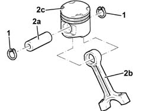
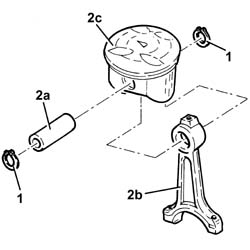
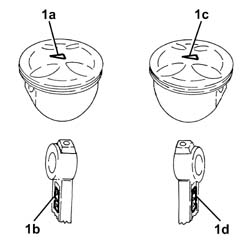
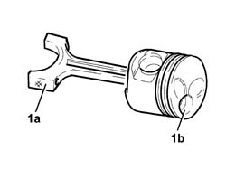

1028H54 piston/cylinder liner - r r
- Path
- Procedures > 10 ENGINE > 1028 PISTONS AND CONNECTING RODS > 1028H pistons and connecting rods > 1028H54 piston/cylinder liner - r r
- Kind
- repair procedure (removal / refitting; the operation number is the code)
- Applies to
- all engines; all production periods
- Interactive page
- https://sloeber94.github.io/elrnDB-a147/en/#/3025997
Applies to: engines: 1.6 TS; all production periods
1. Remove the circlips
2. Remove the pin (2a) and separate the connecting rod (2b) from the piston (2c).

Applies to: engines: 1.6 TS; all production periods
Assemble the connecting rod to the piston so that the number stamped on the small end faces the large notches (for inlet valves) on the piston crown.
Fit the pin and secure it with its circlips.
Applies to: engines: 2.0 TS; all production periods
1. Remove the circlips
2. Remove the pin (2a) and separate the connecting rod (2b) from the piston (2c).

Applies to: engines: 2.0 TS; all production periods
Assemble the connecting rod to the piston so that the number stamped on the small end faces the large notches (for inlet valves) on the piston crown.
Fit the pin and secure it with its circlips.
Applies to: engines: 3.2 V6; all production periods
 Dismantling
Dismantling
 Reassembling
Reassembling1. Remove the circlips.
2. Remove the pin (2a) and separate the connecting rod (2b) from the piston (2c).

Applies to: engines: 3.2 V6; all production periods
Reassembling
Dismantling1. Join the connecting rod to the piston so that:
for the left bank, arrow (1a) stamped on the piston is turned toward the same side as the stamp (1b) on the connecting rod;
for the right bank, arrow (1c) stamped on the piston is turned towards the opposite side to the stamp on the connecting rod.
Refit the pin and secure using piston rings.

Applies to: engines: 1.9 JTD 8V; all production periods
Dismantling
Reassembling1. Remove the circlips
2. Remove the pin (2a) and separate the connecting rod (2b) from the pistons (2c).

Applies to: engines: 1.9 JTD 8V; all production periods
Reassembling
Dismantling1. Join the connecting rods to the pistons so that the number stamped on the big end (1a) is facing the combustion chamber (1b) in the piston.
Fit the pins and fix them using the circlips.

Applies to: engines: 1.9 JTD 16V; all production periods
Dismantling
Reassembling1. Remove the circlips.
2. Remove the pin (2a) and separate the connecting rod (2b) from the pistons (2c).

Applies to: engines: 1.9 JTD 16V; all production periods
Reassembling
Dismantling1. Join the connecting rods to the pistons so that the number stamped on the big end (1a) is facing the reference (1b) on the piston skirt where the oil jet is housed.
Fit the pins and secure them using the circlips.